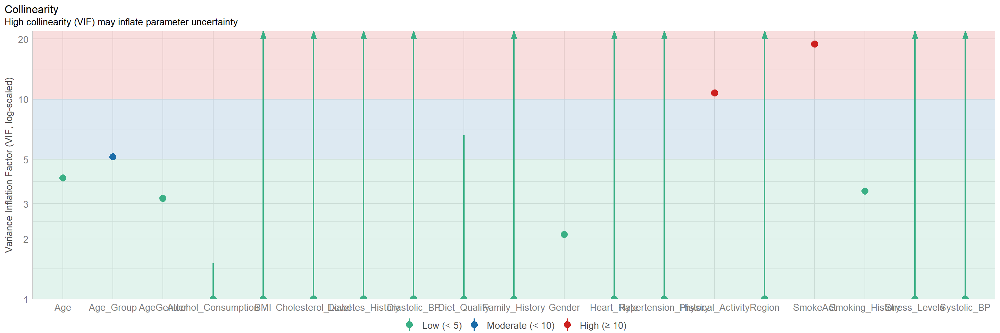
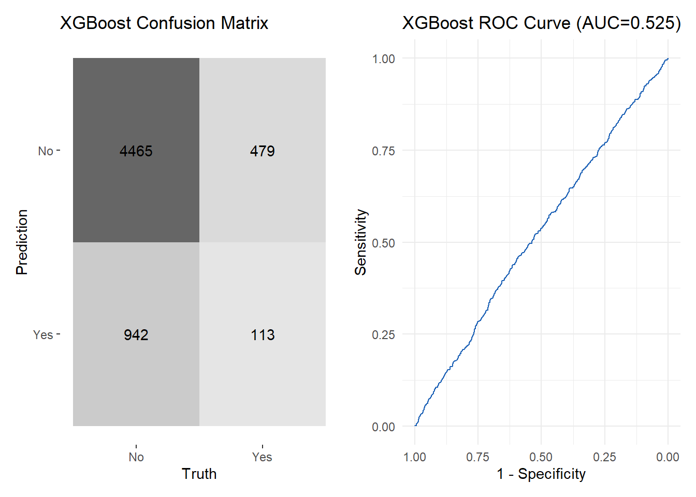

pacman::p_load(tidyverse, SmartEDA, easystats, reshape2, caret, yardstick, pROC, GGally, ggmosaic, patchwork, xgboost)Take-home Exercise 1: Examining Heart Attack Risk in Japan
Overview
This dataset investigates the epidemiology of heart attacks among different segments of the Japanese population. Japan’s rapidly aging demographic and high healthcare standards make it a unique context in which lifestyle, clinical parameters, and heart attack occurrence interact in complex ways.
Our task
In this exercise we will be:
- Examining Heart Attack Occurrence: Analyze the distribution and determinants of heart attack events across the dataset.
- Conducting Demographic Analysis: Investigate how age, gender, and region contribute to heart attack risk, distinguishing between younger and older cohorts.
- Exploring Health Metrics: Visualize relationships between clinical indicators (e.g., BMI, blood pressure, cholesterol) and heart attack occurrence.
- Assessing Lifestyle Factors: Evaluate the impact of lifestyle variables such as smoking history, physical activity, diet quality, alcohol consumption, and stress levels on heart health.
Getting started
Load packages
We load the following R packages using the pacman::p_load() function:
- tidyverse: Core collection of R packages for data wrangling and visualization (e.g.,
dplyr,ggplot2)
- SmartEDA: For the
ExpData()function used in exploratory data analysis
- easystats: Specifically for
check_collinearity()to diagnose multicollinearity issues
- reshape2: Provides the
melt()function for reshaping data from wide to long format
- caret: Functions for data partitioning (
createDataPartition) and model training workflows
- yardstick: Offers
conf_mat()and other classification metrics
- pROC: For ROC curves and AUC calculations (
roc,auc)
- GGally: For the
ggpairs()function to create pairwise scatterplot matrices
- ggmosaic: To create mosaic plots via
geom_mosaic()
- patchwork: For arranging multiple ggplot figures into a composite layout
- xgboost: Gradient boosting library for classification and regression tasks
This dataset contains information about heart attack occurrences in Japan, focusing on various demographic and health-related factors.
Import data
heart_data <- read_csv("./data/japan_heart_attack_dataset.csv")Data pre-processing
Glimpse of data
Using the glimpse() function, we see that the dataset consists of 30,000 rows and 32 columns. The output displays the column names, their data types, and the first few entries for each variable. Additionally, there are 15 extra columns (Extra_Column_1 to Extra_Column_15) which are not clearly defined.
glimpse(heart_data)Rows: 30,000
Columns: 32
$ Age <dbl> 56, 69, 46, 32, 60, 25, 78, 38, 56, 75, 36, 40…
$ Gender <chr> "Male", "Male", "Male", "Female", "Female", "F…
$ Region <chr> "Urban", "Urban", "Rural", "Urban", "Rural", "…
$ Smoking_History <chr> "Yes", "No", "Yes", "No", "No", "No", "No", "Y…
$ Diabetes_History <chr> "No", "No", "No", "No", "No", "No", "Yes", "No…
$ Hypertension_History <chr> "No", "No", "No", "No", "No", "No", "Yes", "No…
$ Cholesterol_Level <dbl> 186.4002, 185.1367, 210.6966, 211.1655, 223.81…
$ Physical_Activity <chr> "Moderate", "Low", "Low", "Moderate", "High", …
$ Diet_Quality <chr> "Poor", "Good", "Average", "Good", "Good", "Go…
$ Alcohol_Consumption <chr> "Low", "Low", "Moderate", "High", "High", "Hig…
$ Stress_Levels <dbl> 3.644786, 3.384056, 3.810911, 6.014878, 6.8068…
$ BMI <dbl> 33.96135, 28.24287, 27.60121, 23.71729, 19.771…
$ Heart_Rate <dbl> 72.30153, 57.45764, 64.65870, 55.13147, 76.667…
$ Systolic_BP <dbl> 123.90209, 129.89331, 145.65490, 131.78522, 10…
$ Diastolic_BP <dbl> 85.68281, 73.52426, 71.99481, 68.21133, 92.902…
$ Family_History <chr> "No", "Yes", "No", "No", "No", "No", "No", "No…
$ Heart_Attack_Occurrence <chr> "No", "No", "No", "No", "No", "No", "No", "No"…
$ Extra_Column_1 <dbl> 0.40498852, 0.03627815, 0.85297888, 0.39085280…
$ Extra_Column_2 <dbl> 0.43330004, 0.51256694, 0.21959083, 0.29684675…
$ Extra_Column_3 <dbl> 0.62871236, 0.66839275, 0.61343656, 0.15572404…
$ Extra_Column_4 <dbl> 0.70160955, 0.11552874, 0.50800995, 0.87025144…
$ Extra_Column_5 <dbl> 0.49814235, 0.42381938, 0.90066981, 0.39035591…
$ Extra_Column_6 <dbl> 0.007901312, 0.083932768, 0.227205241, 0.40318…
$ Extra_Column_7 <dbl> 0.79458257, 0.68895108, 0.49634358, 0.74140891…
$ Extra_Column_8 <dbl> 0.29077922, 0.83016364, 0.75210679, 0.22396813…
$ Extra_Column_9 <dbl> 0.49719307, 0.63449028, 0.18150125, 0.32931387…
$ Extra_Column_10 <dbl> 0.52199452, 0.30204337, 0.62918031, 0.14319054…
$ Extra_Column_11 <dbl> 0.79965663, 0.04368285, 0.01827617, 0.90778075…
$ Extra_Column_12 <dbl> 0.72239788, 0.45166789, 0.06322702, 0.54232201…
$ Extra_Column_13 <dbl> 0.1487387, 0.8786714, 0.1465122, 0.9224606, 0.…
$ Extra_Column_14 <dbl> 0.8340099, 0.5356022, 0.9972962, 0.6262165, 0.…
$ Extra_Column_15 <dbl> 0.061632229, 0.617825340, 0.974455410, 0.22860…The following provides an overview of the Japan Heart Attack dataset using the ExpData() function, summarizing both overall and variable-level details.
summary1 <- heart_data %>%
ExpData(type = 1)
# Display the summary (further customization possible)
summary1 Descriptions Value
1 Sample size (nrow) 30000
2 No. of variables (ncol) 32
3 No. of numeric/interger variables 22
4 No. of factor variables 0
5 No. of text variables 10
6 No. of logical variables 0
7 No. of identifier variables 20
8 No. of date variables 0
9 No. of zero variance variables (uniform) 0
10 %. of variables having complete cases 100% (32)
11 %. of variables having >0% and <50% missing cases 0% (0)
12 %. of variables having >=50% and <90% missing cases 0% (0)
13 %. of variables having >=90% missing cases 0% (0)summary2 <- heart_data %>%
ExpData(type = 2)
# Display the summary (further customization possible)
summary2 Index Variable_Name Variable_Type Sample_n Missing_Count
1 1 Age numeric 30000 0
2 2 Gender character 30000 0
3 3 Region character 30000 0
4 4 Smoking_History character 30000 0
5 5 Diabetes_History character 30000 0
6 6 Hypertension_History character 30000 0
7 7 Cholesterol_Level numeric 30000 0
8 8 Physical_Activity character 30000 0
9 9 Diet_Quality character 30000 0
10 10 Alcohol_Consumption character 30000 0
11 11 Stress_Levels numeric 30000 0
12 12 BMI numeric 30000 0
13 13 Heart_Rate numeric 30000 0
14 14 Systolic_BP numeric 30000 0
15 15 Diastolic_BP numeric 30000 0
16 16 Family_History character 30000 0
17 17 Heart_Attack_Occurrence character 30000 0
18 18 Extra_Column_1 numeric 30000 0
19 19 Extra_Column_2 numeric 30000 0
20 20 Extra_Column_3 numeric 30000 0
21 21 Extra_Column_4 numeric 30000 0
22 22 Extra_Column_5 numeric 30000 0
23 23 Extra_Column_6 numeric 30000 0
24 24 Extra_Column_7 numeric 30000 0
25 25 Extra_Column_8 numeric 30000 0
26 26 Extra_Column_9 numeric 30000 0
27 27 Extra_Column_10 numeric 30000 0
28 28 Extra_Column_11 numeric 30000 0
29 29 Extra_Column_12 numeric 30000 0
30 30 Extra_Column_13 numeric 30000 0
31 31 Extra_Column_14 numeric 30000 0
32 32 Extra_Column_15 numeric 30000 0
Per_of_Missing No_of_distinct_values
1 0 62
2 0 2
3 0 2
4 0 2
5 0 2
6 0 2
7 0 30000
8 0 3
9 0 3
10 0 4
11 0 29613
12 0 30000
13 0 30000
14 0 30000
15 0 30000
16 0 2
17 0 2
18 0 30000
19 0 30000
20 0 30000
21 0 30000
22 0 30000
23 0 30000
24 0 30000
25 0 30000
26 0 30000
27 0 30000
28 0 30000
29 0 30000
30 0 30000
31 0 30000
32 0 30000Convert categorical variables to factors
From the overview above, we see that the dataset contains no missing values, and the categorical variables have a maximum of 4 unique values. Converting these variables into factors ensures they are correctly treated as categorical data during analysis and visualization.
# Convert selected categorical variables into factors
heart_data <- heart_data %>%
mutate(
Gender = as.factor(Gender),
Region = as.factor(Region),
Smoking_History = as.factor(Smoking_History),
Diabetes_History = as.factor(Diabetes_History),
Hypertension_History = as.factor(Hypertension_History),
Physical_Activity = as.factor(Physical_Activity),
Diet_Quality = as.factor(Diet_Quality),
Alcohol_Consumption = as.factor(Alcohol_Consumption),
Family_History = as.factor(Family_History),
Heart_Attack_Occurrence = as.factor(Heart_Attack_Occurrence)
)Drop extra columns
# Select only the Extra_Columns and the outcome variable
extra_data <- heart_data %>%
select(starts_with("Extra_Column_"), Heart_Attack_Occurrence)
# Reshape to long format
extra_data_long <- melt(extra_data, id.vars = "Heart_Attack_Occurrence")
# Create boxplots comparing each Extra_Column by Heart_Attack_Occurrence
ggplot(extra_data_long, aes(x = Heart_Attack_Occurrence, y = value)) +
geom_boxplot() +
facet_wrap(~ variable, scales = "free") +
labs(
title = "Distribution of Extra Columns by Heart Attack Occurrence",
x = "Heart Attack Occurrence",
y = "Value"
)
Since these variables do not appear to vary by heart attack status, they are unlikely to provide useful information for any downstream analysis (e.g., modeling, hypothesis testing). Dropping them will simplify the dataset and help focus on variables that do relate to heart attack risk.
We can drop them with the following code:
heart_data <- heart_data %>%
select(-starts_with("Extra_Column_"))Cleaned dataset
glimpse(heart_data)Rows: 30,000
Columns: 17
$ Age <dbl> 56, 69, 46, 32, 60, 25, 78, 38, 56, 75, 36, 40…
$ Gender <fct> Male, Male, Male, Female, Female, Female, Male…
$ Region <fct> Urban, Urban, Rural, Urban, Rural, Rural, Urba…
$ Smoking_History <fct> Yes, No, Yes, No, No, No, No, Yes, No, No, No,…
$ Diabetes_History <fct> No, No, No, No, No, No, Yes, No, No, No, No, N…
$ Hypertension_History <fct> No, No, No, No, No, No, Yes, No, Yes, No, Yes,…
$ Cholesterol_Level <dbl> 186.4002, 185.1367, 210.6966, 211.1655, 223.81…
$ Physical_Activity <fct> Moderate, Low, Low, Moderate, High, Low, High,…
$ Diet_Quality <fct> Poor, Good, Average, Good, Good, Good, Poor, P…
$ Alcohol_Consumption <fct> Low, Low, Moderate, High, High, High, High, No…
$ Stress_Levels <dbl> 3.644786, 3.384056, 3.810911, 6.014878, 6.8068…
$ BMI <dbl> 33.96135, 28.24287, 27.60121, 23.71729, 19.771…
$ Heart_Rate <dbl> 72.30153, 57.45764, 64.65870, 55.13147, 76.667…
$ Systolic_BP <dbl> 123.90209, 129.89331, 145.65490, 131.78522, 10…
$ Diastolic_BP <dbl> 85.68281, 73.52426, 71.99481, 68.21133, 92.902…
$ Family_History <fct> No, Yes, No, No, No, No, No, No, No, Yes, Yes,…
$ Heart_Attack_Occurrence <fct> No, No, No, No, No, No, No, No, Yes, No, No, N…Exploratory visuals
Create new variables
We create a new variable, Age_Group, classifying individuals as “Over50” or “50OrBelow” to compare younger vs. older individuals.
heart_data_eda <- heart_data %>%
mutate(Age_Group = ifelse(Age > 50, "Over50", "50OrBelow") %>% as.factor())We create AgeGender by combining the Age_Group and gender. We also combine smoking status and physical activity into SmokeAct and reorder alcohol consumption levels.
# Demographic variables
heart_data_eda <- heart_data_eda %>%
mutate(
AgeGender = case_when(
Age_Group == "Over50" & Gender == "Male" ~ "Over 50 Male",
Age_Group == "Over50" & Gender == "Female" ~ "Over 50 Female",
Age_Group == "50OrBelow" & Gender == "Male" ~ "≤50 Male",
Age_Group == "50OrBelow" & Gender == "Female" ~ "≤50 Female"
) %>% factor(levels = c("≤50 Female","≤50 Male","Over 50 Female","Over 50 Male"))
)
# Lifestyle variables
heart_data_eda <- heart_data_eda %>%
mutate(
SmokeAct = case_when(
Smoking_History == "Yes" & Physical_Activity == "Low" ~ "Smoker, PA:Low",
Smoking_History == "Yes" & Physical_Activity == "Moderate" ~ "Smoker, PA:Mod",
Smoking_History == "Yes" & Physical_Activity == "High" ~ "Smoker, PA:High",
Smoking_History == "No" & Physical_Activity == "Low" ~ "Non-Smoker, PA:Low",
Smoking_History == "No" & Physical_Activity == "Moderate" ~ "Non-Smoker, PA:Mod",
Smoking_History == "No" & Physical_Activity == "High" ~ "Non-Smoker, PA:High"
) %>%
# Order them in a sensible sequence:
factor(levels = c("Non-Smoker, PA:Low","Non-Smoker, PA:Mod","Non-Smoker, PA:High",
"Smoker, PA:Low","Smoker, PA:Mod","Smoker, PA:High"))
)Mosaic Plot: Demographic Analysis
We plot a mosaic where AgeGender is on the x-axis, color indicates heart attack occurrence, and each facet represents a different region.
p_demo <- ggplot(heart_data_eda) +
geom_mosaic(
aes(x = product(AgeGender),
fill = Heart_Attack_Occurrence,
text = paste0("Group: ", AgeGender,
"<br>Region: ", Region,
"<br>Heart Attack: ", Heart_Attack_Occurrence)
),
alpha = 0.9
) +
facet_wrap(~ Region) +
scale_fill_manual(values = c("No" = "#F1B1B5", "Yes" = "#97B3AE")) +
labs(
title = "Demographic Mosaic: Age & Gender by Region vs. Heart Attack",
x = "Age & Gender",
y = " ",
fill = "Heart Attack"
) +
theme_minimal()
p_demo
Explanation of the plot
This mosaic plot illustrates heart attack occurrences across different age and gender groups within rural and urban regions. The width of each bar segment corresponds to the relative size of that demographic group, while the height indicates the proportion of individuals who experienced a heart attack.
Overall, heart attack rates remain relatively consistent between rural and urban areas. However, males tend to have a higher probability of heart attack than females, regardless of age or region.
Mosaic plot: Lifestyle factors
We create a mosaic plot with SmokeAct on the x-axis, color by heart attack occurrence, and facet by the four alcohol consumption levels.
# Reorder factor levels for Alcohol_Consumption
heart_data_eda <- heart_data_eda %>%
mutate(
Alcohol_Consumption = factor(
Alcohol_Consumption,
levels = c("High", "Moderate", "Low", "None")
)
)
ggplot(heart_data_eda) +
geom_mosaic(aes(
x = product(SmokeAct),
fill = Heart_Attack_Occurrence
), alpha = 0.9) +
facet_wrap(~ Alcohol_Consumption, ncol = 2) +
scale_fill_manual(values = c("No" = "#F1B1B5", "Yes" = "#97B3AE")) +
labs(
title = "Lifestyle Mosaic: Smoking, Activity, and Alcohol vs. Heart Attack",
subtitle = "PA = Physical Activity. Each facet represents a different Alcohol Consumption level.",
x = "Smoking & PA Group",
y = "",
fill = "Heart Attack"
) +
theme_minimal() +
theme(
plot.title = element_text(face = "bold", size = 14, hjust=0.5),
plot.subtitle = element_text(size = 10, hjust=0.5),
strip.text = element_text(face="bold"),
axis.text.x = element_text(angle=40, hjust=1, size=7),
panel.spacing = unit(2, "lines")
)
Explanation of the plot
This mosaic plot explores how smoking, physical activity (PA), and alcohol consumption interact to influence heart attack occurrences. Each facet represents a different alcohol consumption level (High, Moderate, Low, None).
Interestingly, non-smokers who report no alcohol consumption but high physical activity exhibit one of the highest heart attack rates. Additionally, smokers with moderate physical activity tend to have higher heart attack rates compared to smokers with low or high physical activity.
Pairwise numeric plot (Health metrics)
This code uses ggpairs() to create a matrix of pairwise plots for all numeric variables in heart_data. The mapping = aes(color = Heart_Attack_Occurrence) argument adds a color-coded grouping by heart attack status.
# Automatically select all numeric columns from the dataset
numeric_cols <- sapply(heart_data, is.numeric)
pairwise_plot <- ggpairs(
data = heart_data,
columns = which(numeric_cols),
mapping = aes(color = Heart_Attack_Occurrence),
lower = list(continuous = wrap("smooth", alpha = 0.3, size = 0.5)),
diag = list(continuous = wrap("densityDiag", alpha = 0.5)),
upper = list(continuous = wrap("cor", size = 4))
) +
ggtitle("Pairwise Correlations Among All Numeric Metrics")
pairwise_plot
Explanation of the plot
This grid compares health metrics like BMI, blood pressure, cholesterol, and stress. The diagonal panels show density curves for each variable, revealing, for instance, that Age has a broader distribution compared to the other variables.
The upper panels list correlation coefficients and their significance, most of which are near zero (e.g., Corr: 0.025, 0.048), indicating that these variables do not strongly co-vary. In the lower scatter plots, points are colored by heart attack occurrence; no tight clustering suggests no single numeric threshold exclusively separates “Yes” vs. “No.” For instance, Systolic_BP and Diastolic_BP show little correlation as high Systolic_BP often coexists with both high and low Diastolic_BP. Overall, no single numeric factor stands out as a strictly linear driver of heart attack, though there may be subtle nonlinear or interactive effects to explore later.
Train test split
Before building a predictive model, it is best practice to split the data into training and testing sets. The createDataPartition function ensures that the distribution of the target class is approximately the same in both sets. Here, we allocate 80% of the data for training and 20% for testing.
set.seed(123)
train_index <- createDataPartition(heart_data$Heart_Attack_Occurrence, p = 0.8, list = FALSE)
train_data <- heart_data[train_index, ]
test_data <- heart_data[-train_index, ]Naive logistic regression
Here, we build an initial (“naive”) logistic regression model that includes all available predictors (except the 15 “Extra_Column” variables we dropped). This approach gives us a baseline.
Fit the model
We will fit a logistic regression using glm().
# Use a standard glm with all predictors
naive_glm <- glm(
Heart_Attack_Occurrence ~ .,
data = train_data,
family = binomial
)Understanding the model
We use check_collinearity() to see if any variables are highly correlated or cause near‐complete separation. A “good” logistic regression typically avoids extremely high VIFs or indefinite confidence intervals.
# Capture the output
result <- check_collinearity(naive_glm)
# Coerce to a data frame
df <- as.data.frame(result)
# Use knitr::kable to print the table neatly
knitr::kable(df, caption = "Check for Multicollinearity",
format = "html",
table.attr = "style='width:100%; white-space:nowrap;'")| Term | VIF | VIF_CI_low | VIF_CI_high | SE_factor | Tolerance | Tolerance_CI_low | Tolerance_CI_high |
|---|---|---|---|---|---|---|---|
| Age | 1.001325 | 1.000000 | 1.991615e+01 | 1.000662 | 0.9986771 | 0.0502105 | 0.9999999 |
| Gender | 1.000943 | 1.000000 | 6.378053e+02 | 1.000472 | 0.9990575 | 0.0015679 | 1.0000000 |
| Region | 1.000670 | 1.000000 | 1.062715e+05 | 1.000335 | 0.9993302 | 0.0000094 | 1.0000000 |
| Smoking_History | 1.000446 | 1.000000 | 9.589080e+08 | 1.000223 | 0.9995547 | 0.0000000 | 1.0000000 |
| Diabetes_History | 1.001228 | 1.000000 | 3.808479e+01 | 1.000614 | 0.9987733 | 0.0262572 | 1.0000000 |
| Hypertension_History | 1.000834 | 1.000000 | 3.250209e+03 | 1.000417 | 0.9991664 | 0.0003077 | 1.0000000 |
| Cholesterol_Level | 1.000587 | 1.000000 | 1.351909e+06 | 1.000293 | 0.9994134 | 0.0000007 | 1.0000000 |
| Physical_Activity | 1.001852 | 1.000002 | 2.745436e+00 | 1.000926 | 0.9981510 | 0.3642408 | 0.9999980 |
| Diet_Quality | 1.001445 | 1.000000 | 1.030279e+01 | 1.000722 | 0.9985567 | 0.0970611 | 0.9999998 |
| Alcohol_Consumption | 1.002116 | 1.000005 | 1.852209e+00 | 1.001057 | 0.9978885 | 0.5398958 | 0.9999947 |
| Stress_Levels | 1.000919 | 1.000000 | 8.893873e+02 | 1.000459 | 0.9990821 | 0.0011244 | 1.0000000 |
| BMI | 1.000849 | 1.000000 | 2.561245e+03 | 1.000424 | 0.9991522 | 0.0003904 | 1.0000000 |
| Heart_Rate | 1.000834 | 1.000000 | 3.252876e+03 | 1.000417 | 0.9991665 | 0.0003074 | 1.0000000 |
| Systolic_BP | 1.000939 | 1.000000 | 6.753992e+02 | 1.000469 | 0.9990618 | 0.0014806 | 1.0000000 |
| Diastolic_BP | 1.000920 | 1.000000 | 8.726101e+02 | 1.000460 | 0.9990807 | 0.0011460 | 1.0000000 |
| Family_History | 1.000826 | 1.000000 | 3.716482e+03 | 1.000413 | 0.9991743 | 0.0002691 | 1.0000000 |
Interpreting the collinearity results
- VIF ~1.0 but extremely large upper confidence bounds: This indicates the algorithm is unsure about the exact magnitude of possible collinearity. In simpler terms, the model’s variance–covariance matrix is nearly singular.
- This often happens when:
- Quasi‐complete separation: Certain variables or combinations nearly “perfectly” predict the outcome.
- Imbalance in the dataset (many more “No” than “Yes”) plus insufficient signal in some predictors.
- Over‐parametrization: Too many correlated predictors for the sample size.
Model performance
# 1) Collinearity plot
check_c <- check_collinearity(naive_glm)
p_collinearity <- plot(check_c) +
theme(axis.text.x = element_text(angle = 40, hjust = 1))
# 2) Confusion matrix heatmap
pred_prob_naive <- predict(naive_glm, newdata = test_data, type = "response")
pred_class_naive <- ifelse(pred_prob_naive >= 0.5, "Yes", "No") %>%
factor(levels = levels(test_data$Heart_Attack_Occurrence))
# Evaluate
naive_results <- data.frame(
obs = test_data$Heart_Attack_Occurrence,
pred = pred_class_naive,
prob = pred_prob_naive
)
naive_cm <- naive_results %>%
conf_mat(obs, pred)
p_confmat <- autoplot(naive_cm, type = "heatmap") +
labs(title = "Naive Logistic Regression: Confusion Matrix")
# 3) ROC curve as a ggplot object using ggroc()
roc_naive <- roc(
response = as.numeric(naive_results$obs),
predictor = as.numeric(naive_results$prob)
)
p_roc <- ggroc(roc_naive, colour = "#1c61b6", legacy.axes = TRUE) +
labs(title = "ROC Curve: Naïve Logistic Model") +
theme_minimal()
combined_plot <- p_collinearity / (p_confmat + p_roc)
# Display the combined plot
combined_plot
Explanation of the plot
- Collinearity Plot:
- This bar chart displays VIF estimates, where the ideal values fall in the green region.
- Individual VIF point estimates hover around 1.0, but their upper confidence intervals extend into the red, indicating extremely high values.
- This suggests that the model’s parameter estimates are unstable due to quasi‐complete separation or an excess of correlated predictors relative to the sample size. In essence, the model cannot reliably discern each variable’s true contribution, leading to artificially low VIF point estimates paired with massive uncertainty bounds.
- Confusion Matrix:
- The matrix shows 0 true positives.
- This is typical when a logistic model either encounters near-complete separation or opts to disregard the minority class in imbalanced datasets.
- ROC Curve:
- The ROC curve lies near the diagonal reference line, confirming that the model lacks predictive power and is essentially guessing.
Improving logistic regression
Rationale
Our naïve logistic regression suggested potential issues: - Very low sensitivity (predicting all “No”) - Large variance inflation factor (VIF) intervals
Therefore, we refine the logistic model by:
- Use weighted logistic regression to handle class imbalance,
- Incorporate mild non-linear terms for
BMI,Systolic_BP, andDiastolic_BPwith polynomial expansions,
- Remove redundant variables.
new_train <- train_data
new_test <- test_data
new_formula <- as.formula(
"Heart_Attack_Occurrence ~ Age + Gender + Family_History + poly(BMI, 2, raw=TRUE) +
Heart_Rate + poly(Systolic_BP, 2, raw=TRUE) + poly(Diastolic_BP, 2, raw=TRUE) + Cholesterol_Level +
Diabetes_History + Hypertension_History + Physical_Activity + Smoking_History +
Diet_Quality + Alcohol_Consumption + Stress_Levels"
)Creating observation weights
We create balanced weights to give more importance to the minority class. This ensures misclassifying a minority‐class “Yes” is penalized more strongly than misclassifying a “No.”
n_yes <- sum(new_train$Heart_Attack_Occurrence == "Yes")
n_no <- sum(new_train$Heart_Attack_Occurrence == "No")
N <- n_yes + n_no
w_yes <- N / (2 * n_yes)
w_no <- N / (2 * n_no)
# Assign weights in the new training dataset
new_train$weights_col <- ifelse(
new_train$Heart_Attack_Occurrence == "Yes",
w_yes,
w_no
)Fit weighted logistic model
model_glm_weighted <- glm(
formula = new_formula,
data = new_train,
family = binomial(link = "logit"),
weights = weights_col
)# Capture the output
result <- check_collinearity(model_glm_weighted)
# Coerce to a data frame
df <- as.data.frame(result)
# Use knitr::kable to print the table neatly
knitr::kable(df, caption = "Check for Multicollinearity",
format = "html",
table.attr = "style='width:100%; white-space:nowrap;'")| Term | VIF | VIF_CI_low | VIF_CI_high | SE_factor | Tolerance | Tolerance_CI_low | Tolerance_CI_high |
|---|---|---|---|---|---|---|---|
| Age | 1.004556 | 1.000277 | 1.074857 | 1.002275 | 0.9954646 | 0.9303566 | 0.9997228 |
| Gender | 1.003347 | 1.000075 | 1.149809 | 1.001672 | 0.9966644 | 0.8697096 | 0.9999252 |
| Family_History | 1.001847 | 1.000002 | 2.774072 | 1.000923 | 0.9981564 | 0.3604809 | 0.9999981 |
| poly(BMI, 2, raw = TRUE) | 1.003982 | 1.000162 | 1.097600 | 1.001989 | 0.9960340 | 0.9110785 | 0.9998376 |
| Heart_Rate | 1.002266 | 1.000008 | 1.614256 | 1.001132 | 0.9977391 | 0.6194804 | 0.9999916 |
| poly(Systolic_BP, 2, raw = TRUE) | 1.005107 | 1.000419 | 1.062202 | 1.002550 | 0.9949186 | 0.9414402 | 0.9995808 |
| poly(Diastolic_BP, 2, raw = TRUE) | 1.004244 | 1.000211 | 1.085491 | 1.002120 | 0.9957736 | 0.9212419 | 0.9997893 |
| Cholesterol_Level | 1.001808 | 1.000002 | 3.013365 | 1.000904 | 0.9981953 | 0.3318549 | 0.9999984 |
| Diabetes_History | 1.002857 | 1.000033 | 1.244352 | 1.001427 | 0.9971512 | 0.8036315 | 0.9999666 |
| Hypertension_History | 1.002289 | 1.000009 | 1.586196 | 1.001144 | 0.9977158 | 0.6304391 | 0.9999911 |
| Physical_Activity | 1.004614 | 1.000291 | 1.073216 | 1.002304 | 0.9954073 | 0.9317786 | 0.9997093 |
| Smoking_History | 1.002518 | 1.000016 | 1.390398 | 1.001258 | 0.9974880 | 0.7192187 | 0.9999838 |
| Diet_Quality | 1.003581 | 1.000102 | 1.125179 | 1.001789 | 0.9964314 | 0.8887471 | 0.9998975 |
| Alcohol_Consumption | 1.007005 | 1.001124 | 1.043643 | 1.003496 | 0.9930440 | 0.9581821 | 0.9988770 |
| Stress_Levels | 1.002948 | 1.000039 | 1.219987 | 1.001473 | 0.9970609 | 0.8196808 | 0.9999605 |
Visualizing the model
pred_prob_improved <- predict(model_glm_weighted, newdata = test_data, type = "response")
ggplot(mapping = aes(x = pred_prob_improved)) +
geom_histogram(bins = 30, fill = "skyblue", color = "white") +
labs(title = "Distribution of Predicted Probabilities (Naïve Logistic)",
x = "Predicted Probability of Heart Attack",
y = "Count")
From the histogram above, we can see that the model is overpredicting positive cases at 0.50 threshold. As the positive cases is approximately 10% of the dataset, we will take a threshold of 0.55 instead.
check_c <- check_collinearity(model_glm_weighted)
p_collinearity <- plot(check_c) +
labs(title = "Collinearity of Weighted Logistic Model") +
theme(axis.text.x = element_text(angle = 40, hjust = 1))
pred_prob_improved <- predict(model_glm_weighted, newdata = test_data, type = "response")
pred_class_improved <- ifelse(pred_prob_improved >= 0.55, "Yes", "No") %>%
factor(levels = levels(test_data$Heart_Attack_Occurrence))
improved_cm <- data.frame(
obs = test_data$Heart_Attack_Occurrence,
pred = pred_class_improved
) %>% conf_mat(obs, pred)
p_confmat <- autoplot(improved_cm, type = "heatmap") +
labs(title = "Weighted Logistic: Confusion Matrix")
roc_improved <- roc(
response = as.numeric(test_data$Heart_Attack_Occurrence),
predictor = as.numeric(pred_prob_improved)
)
p_roc <- ggroc(roc_improved, colour = "#1c61b6", legacy.axes = TRUE) +
labs(title = "ROC Curve: Weighted Logistic Model") +
theme_minimal()
## Combine the three plots
library(patchwork)
combined_plot <- p_collinearity / (p_confmat + p_roc)
combined_plot
Weighted Logistic Regression Results
After applying class weights and mild polynomial terms to BMI and Blood Pressure, our weighted logistic model shows some improvements compared to the naïve model:
Sensitivity Improves: The model now predicts a small number of “Yes” cases rather than labeling everything “No.”
Collinearity appears more stable
- The VIF plot still shows point estimates around 1.0 for most variables, with moderate spikes in confidence intervals for a few. However, these are less extreme than in the naïve model, suggesting the parameter estimates are more stable overall.
Little change to overall accuracy (AUC)
- While the model does somewhat better at identifying positives, the ROC curve remains fairly close to the diagonal, reflecting an AUC only slightly better than 0.5.
- In other words, the model is still not very accurate overall, indicating that the available predictors may not strongly discriminate between “Yes” and “No”—or that we need further refinements (e.g., more complex interactions, alternative transformations, or additional data).
Fitting a xgboost
Data preparation
We first convert the outcome Heart_Attack_Occurrence to a 0/1 numeric variable. Then, we build model matrices using model.matrix() which transforms both categorical and numeric predictors into a suitable format for XGBoost.
# Convert outcome to 0/1
train_data_xgb <- train_data %>%
mutate(YesNo = ifelse(Heart_Attack_Occurrence == "Yes", 1, 0))
x_train <- model.matrix(YesNo ~ . - Heart_Attack_Occurrence, data=train_data_xgb)
y_train <- train_data_xgb$YesNo
test_data_xgb <- test_data %>%
mutate(YesNo = ifelse(Heart_Attack_Occurrence == "Yes", 1, 0))
x_test <- model.matrix(YesNo ~ . - Heart_Attack_Occurrence, data=test_data_xgb)
y_test <- test_data_xgb$YesNo
n_yes <- sum(y_train == 1)
n_no <- sum(y_train == 0)
scale_pos <- n_no / n_yesXGBoost model training
We create DMatrix objects for both training and test sets, then specify key hyperparameters like max_depth, eta, and scale_pos_weight. The model is trained with early stopping if the test AUC does not improve after a certain number of rounds.
dtrain <- xgb.DMatrix(data = x_train, label = y_train)
dtest <- xgb.DMatrix(data = x_test, label = y_test)
param <- list(
objective = "binary:logistic",
eval_metric = "auc", # can also track "error" or "logloss"
max_depth = 10,
eta = 0.2,
scale_pos_weight = scale_pos # imbalance correction
)
# Train with 100 rounds
set.seed(123)
xgb_model <- xgb.train(
params = param,
data = dtrain,
nrounds = 1000,
watchlist= list(train=dtrain, test=dtest),
early_stopping_rounds = 50, # optional, for early stop
print_every_n = 10
)[1] train-auc:0.703267 test-auc:0.493556
Multiple eval metrics are present. Will use test_auc for early stopping.
Will train until test_auc hasn't improved in 50 rounds.
[11] train-auc:0.893593 test-auc:0.519498
[21] train-auc:0.955144 test-auc:0.513634
[31] train-auc:0.977267 test-auc:0.519925
[41] train-auc:0.985509 test-auc:0.514492
[51] train-auc:0.993414 test-auc:0.505698
[61] train-auc:0.996438 test-auc:0.503955
[71] train-auc:0.998506 test-auc:0.502356
Stopping. Best iteration:
[28] train-auc:0.972693 test-auc:0.525233Training AUC may reach near 1.0 (overfitting), but test AUC remains around 0.52, implying the model struggles to find a robust pattern. However, this may also indicate a difference in distribution of the training and testing dataset, and that no robust pattern is learnable from these features. There may also be insufficient predictive signal in the data.
Model evaluation
pred_prob_xgb <- predict(xgb_model, newdata = dtest, iteration_range = xgb_model$best_iteration)
pred_class_xgb <- ifelse(pred_prob_xgb >= 0.5, 1, 0)
results_xgb <- data.frame(
obs = factor(y_test, levels=c(0,1), labels=c("No","Yes")),
pred = factor(pred_class_xgb, levels=c(0,1), labels=c("No","Yes")),
prob = pred_prob_xgb
)
xgb_cm <- conf_mat(results_xgb, truth=obs, estimate=pred)
xgb_cm %>% summary()# A tibble: 13 × 3
.metric .estimator .estimate
<chr> <chr> <dbl>
1 accuracy binary 0.763
2 kap binary 0.0124
3 sens binary 0.826
4 spec binary 0.191
5 ppv binary 0.903
6 npv binary 0.107
7 mcc binary 0.0131
8 j_index binary 0.0167
9 bal_accuracy binary 0.508
10 detection_prevalence binary 0.824
11 precision binary 0.903
12 recall binary 0.826
13 f_meas binary 0.863 ROC curve and confusion matrix
p_confmat <- autoplot(xgb_cm, type="heatmap") +
labs(title="XGBoost Confusion Matrix", fill="Count")
roc_xgb <- roc(response = as.numeric(results_xgb$obs), predictor = results_xgb$prob)
auc_val <- auc(roc_xgb)
p_roc <- ggroc(roc_xgb, colour="#1c61b6") +
labs(
title = paste0("XGBoost ROC Curve (AUC=", round(auc_val,3), ")"),
x = "1 - Specificity",
y = "Sensitivity"
) +
theme_minimal()
combined_plot <- p_confmat | p_roc
combined_plot
Plot explanation:
- Confusion matrix: Shows how many “No” vs. “Yes” cases are classified correctly vs. incorrectly. Despite the class‐imbalance correction, the model still misclassifies most “Yes” events.
- ROC curve: The curve hovers close to the diagonal, with an AUC near ~0.52. This is only marginally better than random guessing (AUC=0.5).
importance_xgb <- xgb.importance(model = xgb_model)
importance_xgb # see a data frame of feature importances Feature Gain Cover Frequency
<char> <num> <num> <num>
1: Cholesterol_Level 0.145242292 0.155522476 0.136697155
2: Systolic_BP 0.136727355 0.167277235 0.132375113
3: Stress_Levels 0.134981157 0.185245402 0.134184340
4: Diastolic_BP 0.134287572 0.160294404 0.126846919
5: BMI 0.131566444 0.126584570 0.123932053
6: Heart_Rate 0.123786314 0.121115391 0.121921801
7: Age 0.083851778 0.050432098 0.092371093
8: Family_HistoryYes 0.010253500 0.002744379 0.011056388
9: Physical_ActivityModerate 0.009907179 0.004210412 0.011659463
10: RegionUrban 0.009613210 0.001768051 0.012262539
11: Smoking_HistoryYes 0.009402740 0.003311462 0.011357925
12: Hypertension_HistoryYes 0.009347006 0.001676643 0.010754850
13: GenderMale 0.009129164 0.005765353 0.011357925
14: Diabetes_HistoryYes 0.008797618 0.001136887 0.009850236
15: Alcohol_ConsumptionLow 0.008275298 0.001408138 0.010553825
16: Diet_QualityGood 0.007770305 0.001091494 0.009146648
17: Alcohol_ConsumptionModerate 0.007592931 0.001353723 0.009850236
18: Diet_QualityPoor 0.007177992 0.003669527 0.007940497
19: Alcohol_ConsumptionNone 0.006439186 0.004718671 0.007638959
20: Physical_ActivityLow 0.005850960 0.000673683 0.008242034
Feature Gain Cover Frequency# Plot
xgb.plot.importance(importance_xgb, top_n = 15,
main="XGBoost Feature Importance")
Interpretation:
While certain features (e.g., Cholesterol_Level, Systolic_BP) rank highest in splitting power, the test AUC is still low. This suggests either insufficient predictive signal or potential overfitting to training noise.
Final thoughts
Across multiple approaches (naive logistic, weighted logistic, XGBoost), the models struggle to achieve predictive accuracy on the test set. This may indicate that the available features (after dropping the undefined extras) do not strongly distinguish between heart attack occurrences. Additional data, refined feature engineering, or domain expertise might be necessary to improve predictive performance. Nonetheless, the exploratory visualizations provide insights into demographic and lifestyle patterns associated with heart attack risk in Japan.